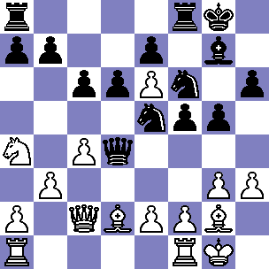

Obrona holenderska
Obrona holenderska to otwarcie szachowe dla czarnych, które powstaje po ruchach 1. d4 f5. Jest to agresywne i dynamiczne podejście, w którym czarne od samego początku starają się zdobyć inicjatywę na skrzydle królewskim, jednocześnie przygotowując solidną obronę. Celem obrony holenderskiej jest kontrolowanie centrum oraz rozwój figur w sposób umożliwiający szybkie ataki na króla przeciwnika. Ruch f5 otwiera drogę do ataku na skrzydle królewskim i pozwala czarnym na rozwijanie dynamicznych strategii.
Obrona holenderska tworzy asymetryczną strukturę pionową, różniącą się od bardziej klasycznych otwarć, takich jak Obrona Królewsko-Indyjska czy Gambit Hetmański. Pionek na f5 może stać się zarówno siłą, jak i słabością w zależności od dalszego rozwoju gry. Czarne często starają się kontynuować rozwój figur, grając g6 i Bg7, co prowadzi do fiankietowania gońca, lub mogą wybrać bardziej klasyczny rozwój z e6 i d5.
Główne warianty obrony holenderskiej obejmują wariant leningradzki, klasyczny oraz stonewall. Wariant leningradzki charakteryzuje się szybkim fiankietowaniem gońca na g7, zazwyczaj po ruchach d6 i g6. Czarne budują solidną strukturę pionową, kontrolując centrum i przygotowując kontratak na skrzydle królewskim. Wariant klasyczny rozwija się zazwyczaj po ruchach e6, Nf6 i d5. Jest to bardziej solidne podejście, w którym czarne budują silne centrum i przygotowują się do ataku na skrzydle królewskim. Wariant stonewall charakteryzuje się pionową formacją f5-e6-d5-c6, która tworzy silną barierę w centrum. Czarne mają tutaj bardzo solidną pozycję, ale muszą być przygotowane na obronę przed atakami na skrzydle hetmańskim.
Zalety obrony holenderskiej to agresywne nastawienie, pozwalające czarnym na szybkie przejęcie inicjatywy i przeprowadzenie ataków, elastyczność, oferująca wiele różnych planów w zależności od reakcji białych, oraz element zaskoczenia, który może być problematyczny dla przeciwnika nieprzygotowanego na bardziej niekonwencjonalne otwarcie. Wady obrony holenderskiej to osłabienie skrzydła królewskiego, co może być problematyczne w przypadku kontrataków białych, słabość pola e6, które może stać się celem ataków, zwłaszcza po wymianach pionków, oraz trudności z szybkim rozwojem figur, szczególnie gońca na c8.
Obrona holenderska jest interesującym i dynamicznym wyborem, który może prowadzić do bogatych i skomplikowanych pozycji. Wymaga jednak dobrej znajomości strategii i taktyki, aby skutecznie radzić sobie z wyzwaniami, jakie stawia przeciwnik.
